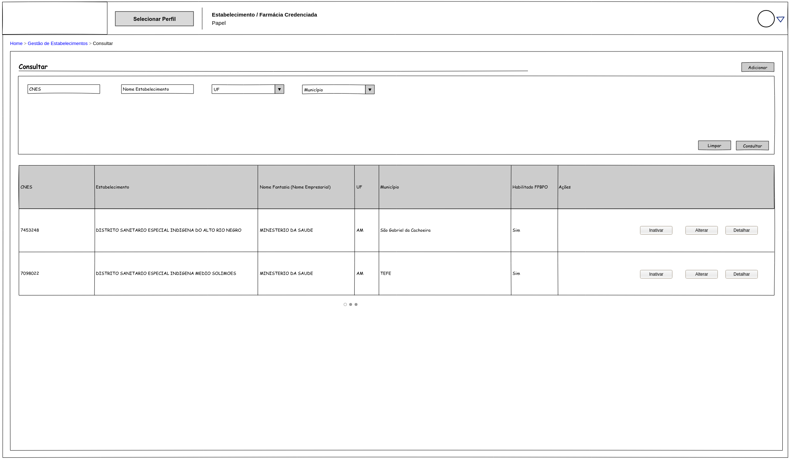
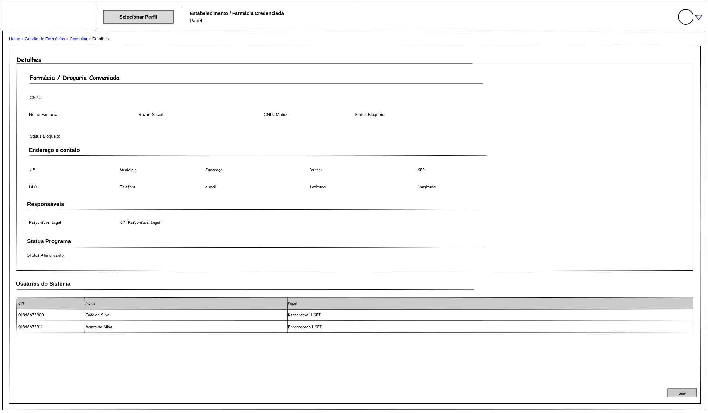
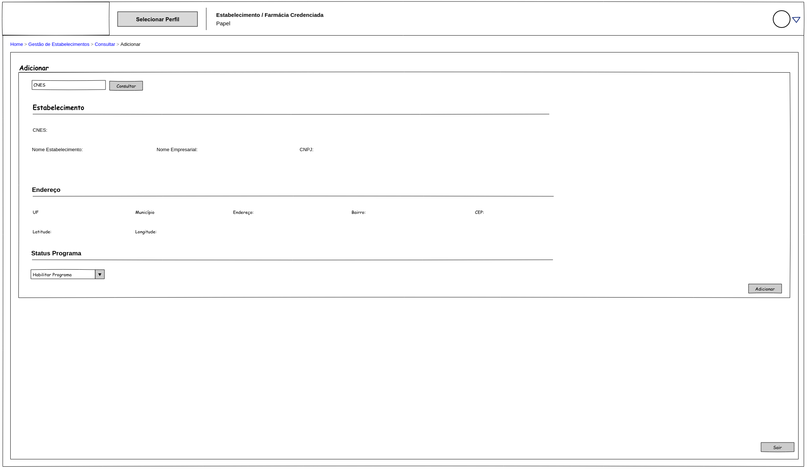

Proposta de Implementação Farmácia Popular do Brasil Povos Originários
| PIFPB: | 005 |
|---|---|
| Título: | Gestão de Estabelecimentos indígenas participantes do programa |
| Autor: | Jessé Azevêdo jesse.azevedo@saude.gov.br |
| Revisor: | Michelly Ribeiro michelly.ribeiro@saude.gov.br |
| Revisor: | Bruno de Oliveira bruno.baltazar@saude.gov.br |
| Status: | Validado |
| Versão: | 1.0 |
Histórico de Revisões
| Versão | Data | Autor | Descrição |
|---|---|---|---|
| 1.0 | 27/05/2025 | Jessé Azevêdo | Criação do documento |
Resumo
Este documento tem por objetivo especificar detalhes da manutenção dos estabelecimentos indígenas aptos ao uso do programa na modalidade de atendimento aos Povos Originários.
Motivação
O Programa Farmácia Popular do Brasil Povos Originários (FPB-PO), é uma aplicação voltada a atender um fluxo específico de atendimento para o Programa Farmácia Popular do Brasil com foco nas necessidades da saúde indígena.
O fluxo de atendimento do FPB-PO envolve um responsável legal, pessoa física legalmente instituída por instrumento definido no âmbito da Secretaria Especial de Saúde Indígena (SESAI), que atua como intermediário entre o usuário indígena e a farmácia/drogaria credenciada. Neste contexto, cada um dos responsáveis legais é vinculado a um ou mais estabelecimentos indígenas, que devem estar previamente cadastrados e habilitados no sistema.
Implementação
Os estabelecimentos indígenas participantes do programa devem ser geridos por atores com o papel "Gestor do Programa Farmácia Popular" ou "Gestor da Secretaria de Saúde Indígena", permitindo ações de inclusão e edição de um estabelecimento indígena no Programa Farmácia Popular do Brasil.
Ao habilitar uma nova farmácia/drogaria credenciada, o sistema deverá consumir os dados da base de dados do Cadastro Nacional de Estabelecimentos de Saúde (CNES), por meio do consumo do serviço de consulta ao CNES (SOA-CNES). Detalhes da integração ao serviço SOA-CNES estão especificados no Portal de Serviços do DATASUS, Portfólio específico do SOA CNES (https://servicos-datasus.saude.gov.br/detalhe/k7JNyFF2mi).
Pontua-se que o SOA-CNES é um webservice do CNES é público, no entanto requer credenciais de acesso para todas as operações realizadas em seus serviços. As credenciais padrão para acesso público são:
Importante
Usuário: CNES.PUBLICO
Senha: cnes#2015public
Essas credenciais devem ser incluídas no Header da mensagem SOAP, utilizando o padrão WS-Security.
Exemplo de Header SOAP com WS-Security:
<soap:Header>
<wsse:Security soap:mustUnderstand=”true” xmlns:wsse=”http://docs.oasis-open.
org/wss/2004/01/oasis-200401-wss-wssecurity-secext-1.0.xsd” xmlns:wsu=”http://
docs.oasis-open.org/wss/2004/01/oasis-200401-wss-wssecurity-utility-1.0.xsd”>
<wsse:UsernameTokenwsu:Id=”UsernameToken-5FCA58BED9F27C406E14576381084652”>
<wsse:Username>CNES.PUBLICO</wsse:Username>
<wsse:Password Type=”http://docs.oasis-open.org/wss/2004/01/
oasis-200401-wss-username-token-profile-1.0#PasswordText”>cnes#2015public</wsse:Password>
</wsse:UsernameToken>
</wsse:Security>
</soap:Header>
A aplicação deverá consumir apenas o recurso CNES Service do Webservice SOA-CNES, que permite a consulta de estabelecimentos de saúde. A consulta deve ser realizada utilizando o CNES do estabelecimento, retornando os dados necessários para o cadastro no sistema FPB-PO.
Ademais, o Webservice SOA-CNES utiliza o padrão SOAP 1.1 e 1.2. No entanto, a integração deverá ser feita utilizando a versão 1.2. Para maiores informações, consulte o manual de integração do SOA-CNES disponível no Portal de Serviços do DATASUS ou clique aqui.
Critérios de Aceitação
- A aplicação deverá manter a relação de estabelecimentos de saúde que poderão submeter solicitações ao programa Farmácia Popular do Brasil na modalidade de atendimento Povos Originários.
- Apenas estabelecimentos de saúde indígenas válidos cadastrados no CNES poderão ser incluídos no PFPB-PO.
- Qualquer alteração realizada no para um estabelecimento previamente cadastrado deverá ser registrado.
- Apenas atores com papel "Gestor do Programa Farmácia Popular" e "Gestor da Secretaria de Saúde Indígena" poderão adicionar ou alterar um estabelecimento indígena.
- Um estabelecimento indígena não pode ser excluído da base de dados.
- Um estabelecimento indígena pode ser inativado , o que o tornará indisponível para novas solicitações, mas manterá seu histórico de alterações.
- Ao inativar um estabelecimento indígena, o sistema deverá registrar a data, usuário responsável e o motivo da inativação.
- Um estabelecimento indígena poderá ser reativado, caso necessário, desde que esteja ativo no CNES.
- Ao reativar um estabelecimento indígena, o sistema deverá registrar a data, usuário responsável e o motivo da reativação.
- A tela "Manter Estabelecimentos Indígenas" deverá permitir a visualização da relação de Responsáveis legais e encarregados permissionados no estabelecimento.
- Deverá ser possível ao ator com papel "Gestor do Programa Farmácia Popular" e "Gestor da Secretaria de Saúde Indígena" visualizar o histórico de alterações de um estabelecimento indígena.
Modelo de Dados
Modelo de Dados para papéis da aplicação FPB-PO.
| Nível | Atributo | Descrição | Cardinalidade | Tipo de Dado | Tamanho | Formato |
|---|---|---|---|---|---|---|
| 1 | Código CNES | Código CNES do estabelecimento cadastrado | 1..1 | string | 7 | |
| 1 | Código da Unidade de Saúde | Código da Unidade de Saúde no CNES | 1..1 | string | 31 | |
| 1 | Nome Fantasia | Nome fantasia do estabelecimento de saúde indígena | 1..1 | string | 150 | |
| 1 | Nome Empresarial | Nome empresarial da Unidade de Saúde (razão social) | 0..1 | string | 255 | |
| 1 | CNPJ | CNPJ do estabelecimento | 0..1 | string | 14 | xx.xxxxxx/xxxx-xx |
| 1 | Tipo de Endereço | Código do tipo de endereço do estabelecimento no CNES | 0..1 | numérico | 1 | |
| 1 | Tipo de Logradouro | Código do tipo de logradouro do estabelecimento no CNES | 0..1 | numérico | 1 | |
| 1 | Descrição do tipo Logradouro | Descrição do tipo de logradouro do estabelecimento no CNES | 0..1 | string | 60 | |
| 1 | Nome Logradouro | Nome do logradouro do estabelecimento no CNES | 0..1 | string | 255 | |
| 1 | Número Logradouro | Número do logradouro do estabelecimento no CNES | 0..1 | string | 20 | |
| 1 | Complemento Logradouro | Complemento do logradouro do estabelecimento no CNES | 0..1 | string | 50 | |
| 1 | Código Bairro | Código do Bairro do estabelecimento no CNES | 0..1 | numérico | 8 | |
| 1 | Descrição do Bairro | Descrição do Bairro do estabelecimento no CNES | 0..1 | string | 255 | |
| 1 | CEP | Código de Endereçamento Postal do estabelecimento no CNES | 0..1 | string | 8 | xxxxx-xxx |
| 1 | Código Município | Código do município do estabelecimento no CNES | 0..1 | numérico | 7 | |
| 1 | Nome Município | Nome do município do estabelecimento no CNES | 0..1 | string | 255 | |
| 1 | Código UF | Código da Unidade Federativa do estabelecimento no CNES | 0..1 | numérico | 2 | |
| 1 | Nome UF | Nome da Unidade Federativa do estabelecimento no CNES | 0..1 | string | 255 | |
| 1 | Latitude | Latitude do estabelecimento credenciado | 0..1 | string | 20 | |
| 1 | Longitude | Longitude do estabelecimento credenciado | 0..1 | string | 20 | |
| 1 | Estado | Estado atual de adesão à modalidade de atendimento aos PO | 1..1 | string | 1 | A - Ativo / I - Inativo |
| 1 | Histórico de Alterações | 0..N | date | - | dd/mm/yyyy | |
| 2 | Data da Alteração | Data em que a alteração foi realizada | 1..1 | date | - | dd/mm/yyyy |
| 2 | Usuário Responsável | Usuário que realizou a alteração | 1..1 | string | 50 | |
| 2 | Motivo da Alteração | Motivo da alteração realizada | 0..1 | string | 255 |
Proposta de modelagem
Elementos de Interface


